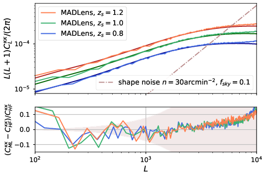
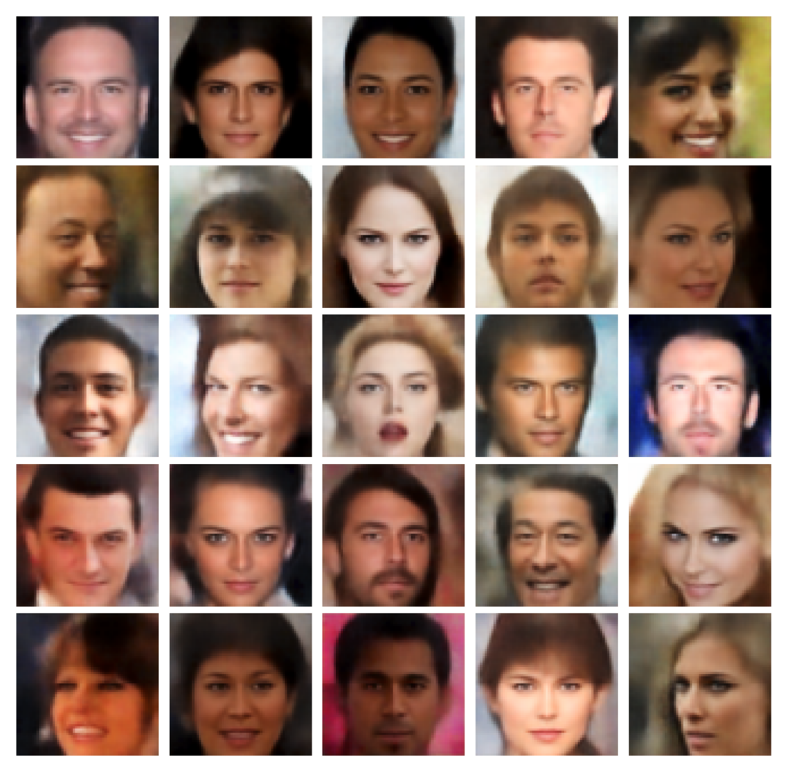
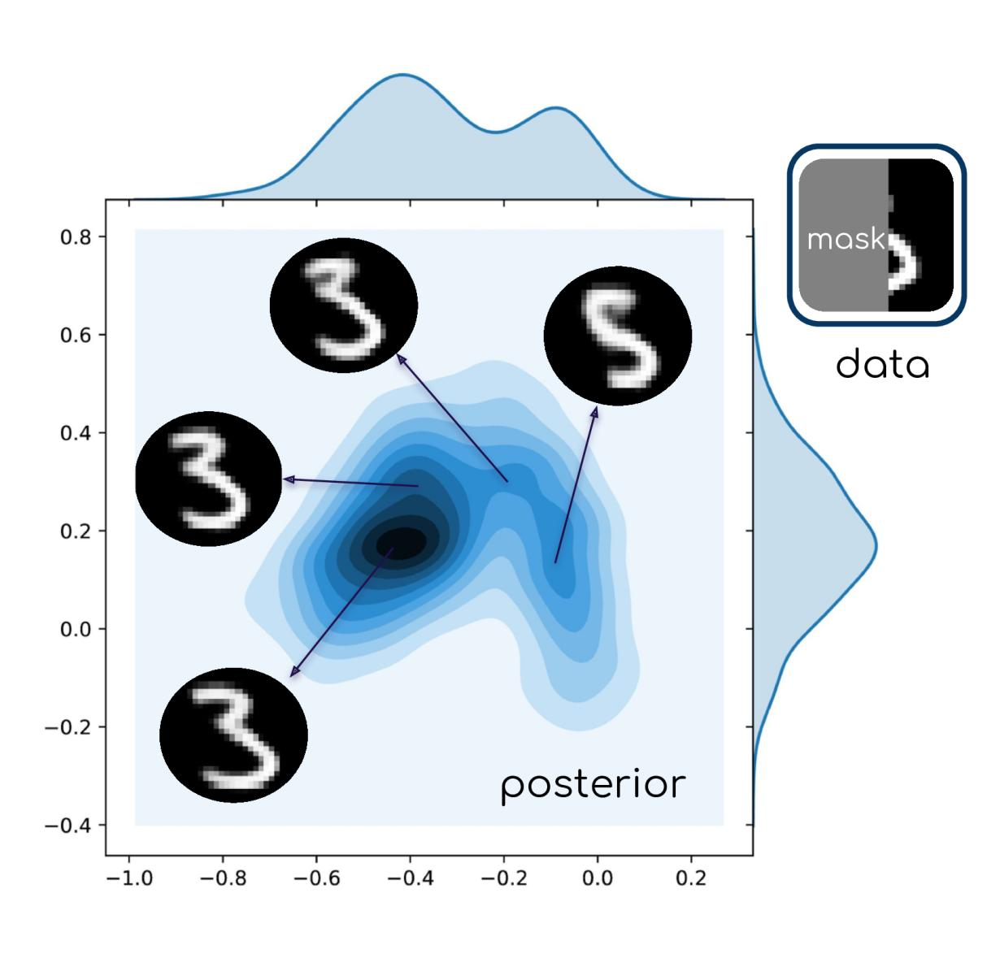
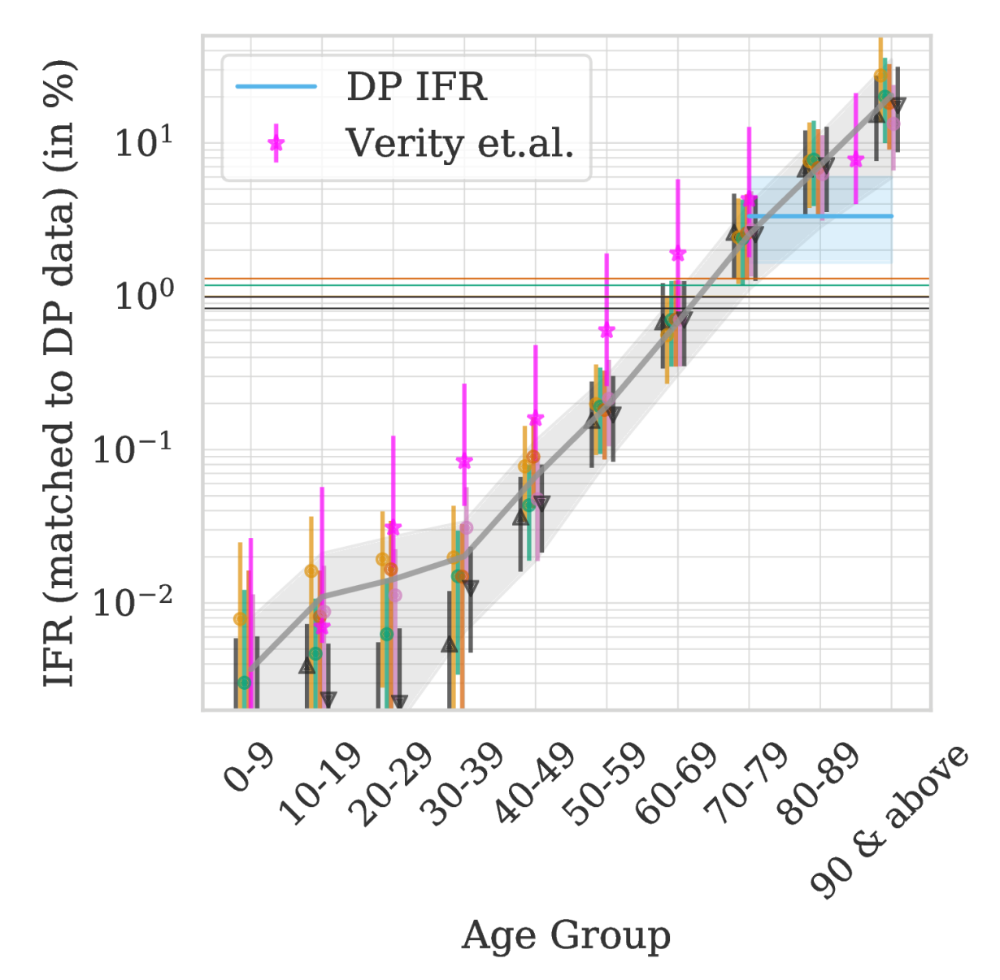
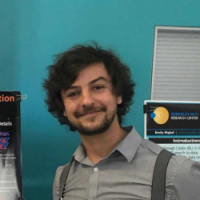

Vanessa Böhm
Cosmology, Machine Learning and More
I'm a postdoctoral researcher at the physics department of UC Berkeley with expertise in machine learning, Bayesian statistics and cosmology. As a cosmologist I specialize in weak gravitational lensing of the CMB and galaxies. I am currently looking for positions inside or outside of academia that allow me to apply my expertises to scientific problems and/or useful causes. Apart from cosmology and (astro)physics, I am passionate about climate science, social justice and transforming transportation networks to be more efficient, cleaner, safer and socially just.
Research
My recent research has been centered around developing and using machine learning algorithms for scientific applications. The methods I develop exploit the powers of machine learning and deep neural networks while meeting the needs of the scientific community: reliable uncertainty estimation, little fine-tuning and fast and easy training. To achieve this, I combine the best of two worlds: traditional (Bayesian) statistics and deep learning. My latest algorithms can be used for accurate anomlay detection, posterior analysis in high dimensions and artificial data generation. Browse my recent publications to learn more.
On the cosmology side I have recently developed a differentiable lightcone code that produces accurate, fully non-linear weak lensing maps at low computational cost. Codes like this pave the way to a new era of weak cosmic shear data analysis. In earlier research, I have explored corrections to lensing observables due to inaccurate theoretical modeling. As a result, I have identified an important bias to CMB lensing measurements that future and current experiments will have to correct for.
Recent Publications

MADLens, fully differentiable lensing simulations
MADLens is a python package that does not only produce accurate non-Gaussian lensing maps at low computational cost, it is also fully differentiable with respect to cosmological parameters and the initial density field.

Probabilistic Auto-Encoder (PAE)
The PAE is an easy-to-train deep generative model that produces state-of-the art results in sample quality and outlier detection accuracy.

Deep Uncertainty Quantification (Deep UQ)
Deep UQ makes high dimensional posterior analysis tractable by combining traditional posterior analysis with machine learning.

Estimating the true fatality rate of COVID-19
A sophisticated time series analysis of Italian mortality data allowed us to accurately infer the fatality rate from COVID-19 shortly after the pandemic had begun. Since then many other publications have confirmed our findings.
Code
I am committed to making all of my codes user-friendly, well documented and publicly available under creative common licenses. All of my codes are hosted on GitHub. Feel free to contact me for support or to report bugs.
Students
I offer research projects to students of all levels and I typically mentor 2-4 students at a time. Because of the upcoming application season I am currently (status fall 2020) not accepting new students, but stay tuned for updates!
Students who are interested in research projects at the intersection of ML and (astro-)physics are welcome to contact me. Programming experience, preferably in Python, is required.
Current Students
Lister Chen
Lister is majoring in Astrophysics and Applied Maths. She is currently in her junior year.
Project: Weak lensing posterior analysis

Max E. Lee
Max is pursuing a double major in Physics/Astrophysics and currently in his senior year.
Project: Developing fully differentiable lensing simulations
Contact
Due to Covid I am currently working from home.
During non-pandemic times, I can be found in
Campbell Hall 341
University of California
Berkeley, CA 94720
{kind=link}
{kind=link}
{kind=link}
{kind=link}